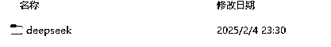
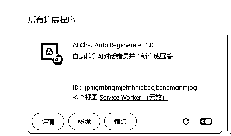
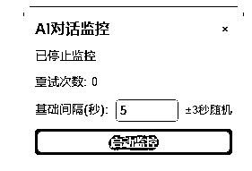
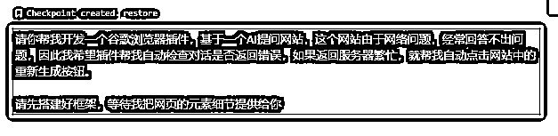
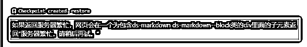

来源：https://ev0ft8k60w2.feishu.cn/docx/QrtgdbvUMogzVdxoxoycCO1wnif
自从 DeepsSeek 受到美国的 DDoS 攻击以及用户量激增，DeepSeek服务器顶不住了。聊天界面时常提示“服务繁忙”或“无法联网搜索”。
虽然有很多第三方平台可以使用 DeepSeek 的 API ，但是你会发现，这些平台的效果远没有官网的好。
最后，我还是打开了 Cursor ，让 DeepSeek 帮我开发一个 DeepSeek自动重试的插件。只要当前对话提示服务器繁忙，请稍后再试，插件就会自动重新提交
使用教程如下：
首先请先把插件下载下来，下载解压后，你会得到这样一个文件夹。

打开谷歌浏览器，打开网站：chrome://extensions/
右上角打开开发者模式
然后把刚刚的文件夹拖拽进来。看到这个拓展程序就代表安装插件成功了。

打开 DeepSeek 官网，右下角就会弹窗一个小小的悬浮窗口。

直接启动监控就可以，为了不要让网站频繁点击访问，我加了一个基础间隔，就是说，对话停止后，如果检测到对话出错了，会等待5-8秒，再去自动点击。
效果：
科普一下如何用 Cursor 开发插件，小白也能完成，不需要懂代码。

第一步，向 AI 清晰描述清楚这个插件是做什么的，让 AI 对需求有个大概的方向。
然后就可以开始向它描述一些细节：

经过几次的交流，基本上 Cursor 就能把整个插件开发出来。
如果你问看不懂什么div，什么css，你只需要把页面中看到的文字，提示，告诉 Cursor ，Cursor 也能找到对应的按钮或元素文本。